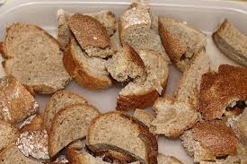
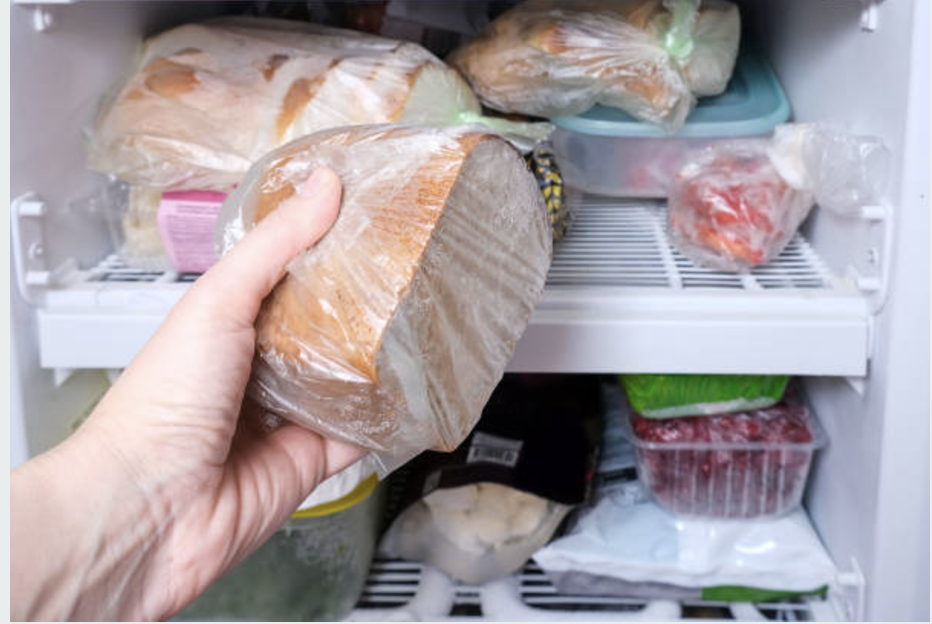
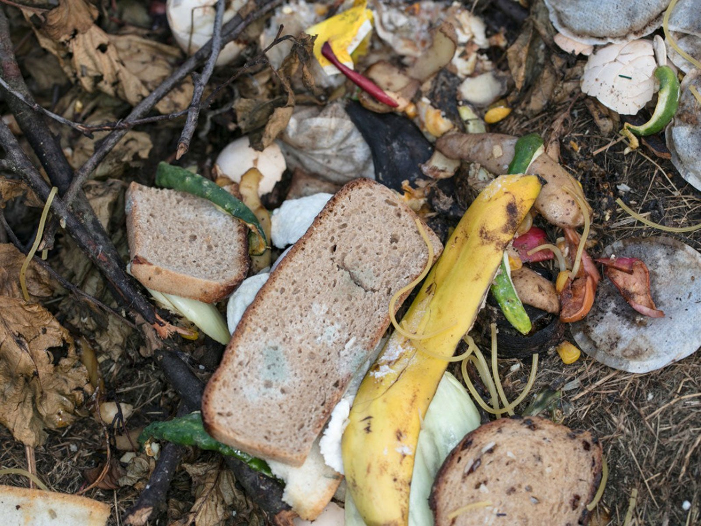
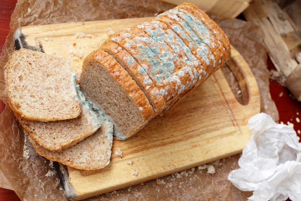

Bread is your most tossed this week. Here is how to waste less and enjoy more!
Top Tips
We think you’ll find these helpful.


Stale Bread?
Bread is your top wasted. Here's how to reduce that.

Bye Bye Mould
Keep bread fresh longer by storing it right.

FREEZE!
Freeze extra bread to enjoy later without waste!

Compost Your Crusts
Add bread scraps to your compost for nutrient-rich soil.